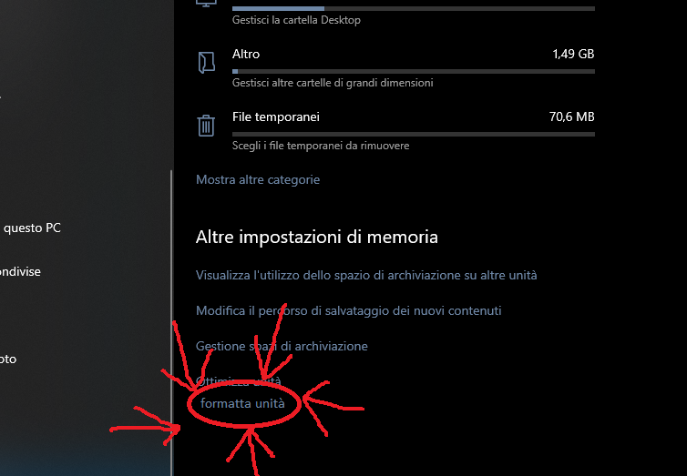
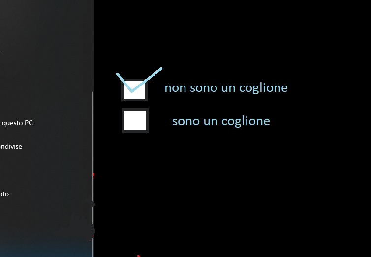

prima di installare windows 9 dovrete ovviamente ottenere windows 9,
il prezzo varia a seconda dello stato economico del Venezuela, la sede di Macrosoft.
però tendenzialmente non dovrebbe superare i 450/7804 dollari americani.
é possibile reperire l'installer per wondos 9 attraverso il sito ufficiale o in ogni tabacchi.
una volta registrati sul sito ufficiale potrete accedere alla pagina dei downloads.
poi selezionate la versione più recente e installate il "win9_installer.msi" di circa 17.4 Gb.
dopo aver fatto ciò inserite delicatamente l'installer all'interno di una chiavetta usb da almento 22.2 Gb
che mi sono dimenticato di menzionare antecedentemente
andate nelle impostazioni del dispositivo e selezionate informazioni sul dispositivo.
dopo selezionate opzioni di sistema e da li selezionate l'opzione opzioni di formattazione.
dopo cliccate sulla spunta che dice "so quello che faccio"/"non sono un coglione".

poi cliccate su formatta dispositivo e deselezionate l'opsione "autodistruzzione del dispositivo".
bene, ora havete formattatto il dispositivo.
andate nelle impostazioni del dispositivo e selezionate informazioni sul dispositivo.
dopo selezionate opzioni di sistema e da li selezionate l'opzione opzioni di formattazione.
formattate il dispositivo e installate vindows 8.1
eseguire gli stessi passi della guida per wondows.
buttate il computer
compratene uno nuovo con wondows 9 già installato
fate doppio click su "win9_installer_legit.msi" e seguite quello che vi dice.
infilate con poca sensualità la chiavetta preparata prima all'interno del dispositivo appena formattato
accendete il dispositivo e premete il tasto di avvio del bios: F12/F11/F10/F9/F8/F7/F6/F5/F4/F3/F2/F1/CANC/boh altri...
una volta dentro il bios, selezionate il boot da chiavata chiavetta.
attentede che bootti da chiavetta.
mondows 9 è installato
una volta installato windows 9 dovrete configurare windows 9
dovrete inserire dei dati per l'attivazione e l'identificazione
dovrete inserire il codice di attivazione, il codice del vostro account macrosoft,
il codice fiscale, impronta digitale, test di sangue, urine e feci, codice dello spid,
credenziale dell'account netflix, gusto di gelato preferito,
il permesso di soggiorno, nome, cognome, data di nacita, cronoligia di chrome,
foto dei piedi, dati della carta di credito, opinione su tutti i film di James Bond,
prova tangibile dell'iscrizione al canale youtube di cicciogamer89, una fetto dell'orecchio sinistro,
anti tetanica, vacciono contro la rabbia e il colera.
dopo aver immesso tutti i dati avrete completato la configurazione di windows 9.
una volta configurato configurato windows 9 sarebbe già pronto all'uso, ma noi di macrosoft
consigliamo degli ultimi passi per avere una esperienza di wondows 9 completa.
prima cosa che vi consigliamo e' di sciegliere lo sfondo del desktop, un computer personalizzato e'
molto più usabile di un computer non personalizzato.
infilatevi wondows 9 su per il culo ;)